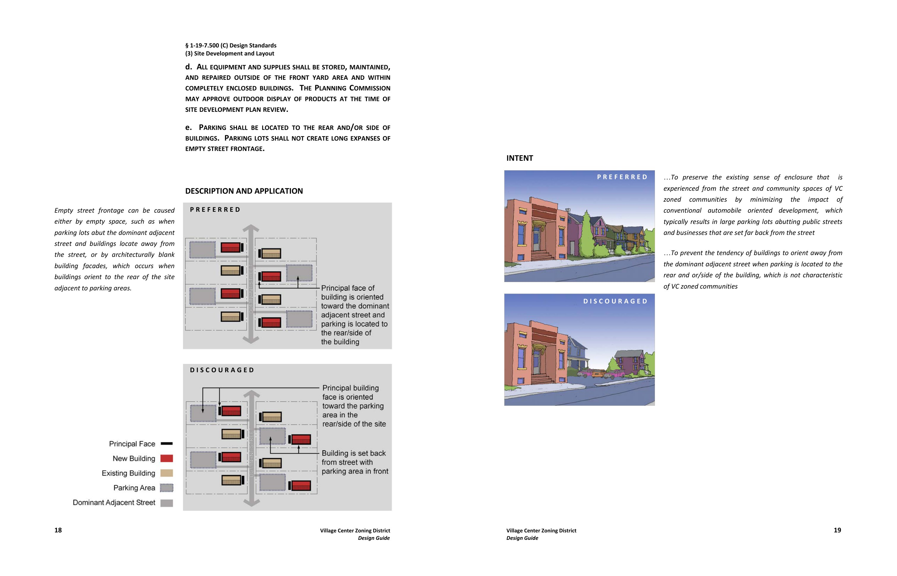
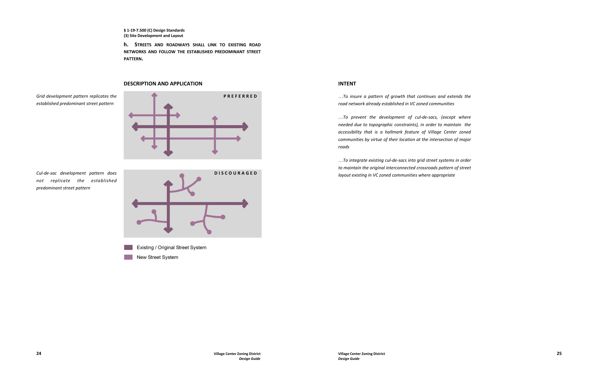
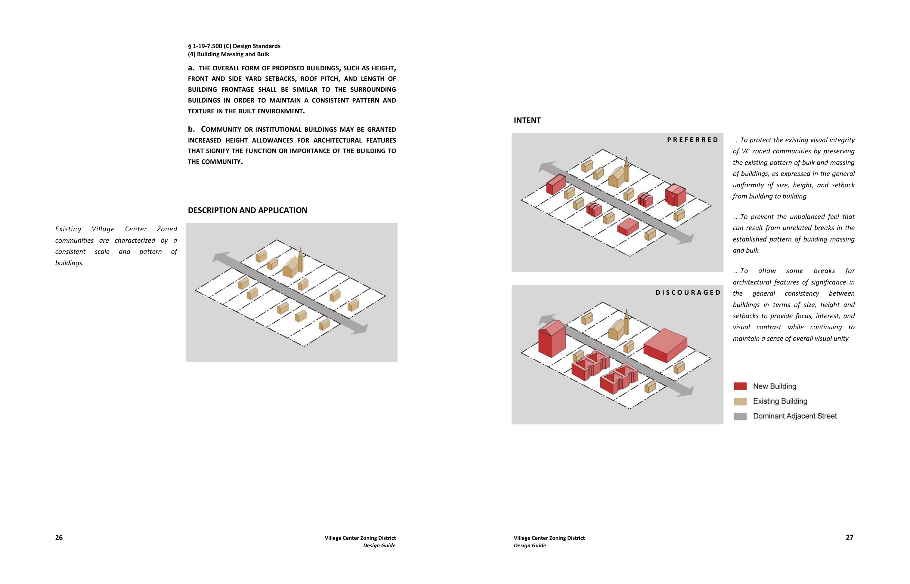
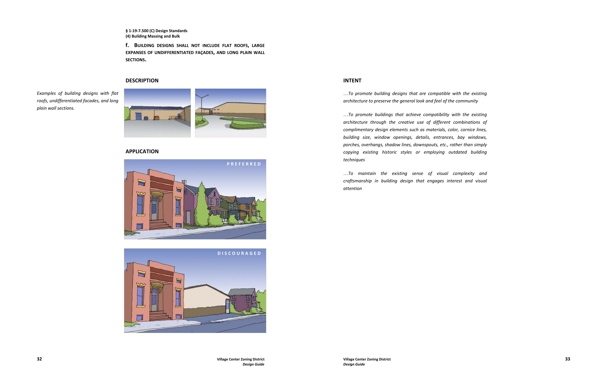

The big idea
The guide treats the existing village itself as the design precedent. Instead of imposing a universal prototype, it asks new development to read the surrounding pattern, how buildings address the street, where parking sits, how streets connect, and how height, setbacks, roofs, frontage, and façade articulation establish local character.
Use the village as the precedent
Base new development on the physical relationships already present in the surrounding community rather than on a generic suburban development model.
Turn regulation into spatial information
Pair zoning language with diagrams, photographs, and preferred/discouraged comparisons so the intended physical outcome can be understood visually.
Explain the intent behind the rule
Separate the underlying design value from a single prescribed solution, allowing the standards to respond to communities with different existing character.
Keep streets at the center of village life
Orient principal façades, entrances, sidewalks, parking, and connected streets so development reinforces the street as a civic and social space.
Why a design guide was needed
A 2006 review of the Village Center zone found that the County's planning vision had evolved beyond the older zoning framework: Village Centers were understood as mixed residential-commercial places whose future development should remain compatible with each community's scale and pattern, yet the ordinance did not fully express that intent or provide strong implementation tools. The later Design Guide became the visual and interpretive companion to the resulting zoning standards.
Make the street the primary community space
The site-design standards begin with the public street. Principal building faces are directed toward the dominant adjacent street; mixed-use buildings are encouraged; service functions and parking move to the side or rear; and sidewalks link development along the primary street. The result is less about architectural style than about preserving the spatial relationship between buildings, movement, and public life.

Extend the inherited street network
Village Centers historically developed around connected crossroads. The guide therefore favors new streets that extend the predominant network and discourages isolated cul-de-sac patterns where they would interrupt that structure. The standard links circulation efficiency to village form rather than treating the road system as a separate engineering layer.

Control massing without freezing architectural style
The building standards use surrounding development as the reference for height, setbacks, roof pitch, frontage length, and overall scale. At the same time, the guide explicitly avoids requiring imitation. Compatibility is framed as a relationship among proportion, materials, openings, roof form, entrances, porches, shadow lines, and other elements that can produce visual continuity through contemporary design.


Design for interpretation as well as compliance
The guide is structured as an information system, not simply an illustrated ordinance. Each design standard is expanded through a recurring sequence that makes both the required action and the underlying reason legible.
Identify the existing pattern
Explain the physical condition or community characteristic that the standard is responding to.
Show how the rule works
Use diagrams to translate text into site layout, building placement, circulation, or massing relationships.
State the design value
Explain why the standard matters so unusual conditions can be interpreted consistently without relying on a single prototype.
Support implementation
Supplement the standards with Village Center community profiles and setback and height measurement worksheets.
Project framework
The Design Guide connects urban design, zoning, and information design. Its central move is to make regulation legible: definitive ordinance language establishes the requirement, while photographs, diagrams, preferred/discouraged examples, and statements of intent explain the physical outcome and the value behind it. That combination allows one regulatory framework to protect recognizable village character while remaining adaptable across communities that differ in history, scale, and development pattern.